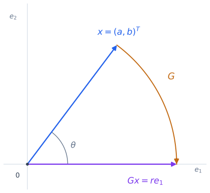

Givens Rotations#
A Givens rotation introduces a zero by rotating just two coordinates. In QR factorization, this means combining two rows to eliminate one entry below the diagonal. The other rows remain unchanged. This local action is useful when a matrix has only a few entries to eliminate, or when we need to update an existing factorization.
As in the Householder construction, we work with \(A\in\mathbb{R}^{m\times n}\), where \(m\ge n\), and seek \(A=QR\) with \(Q\) orthogonal and \(R\) upper trapezoidal. We first construct one rotation, then explain how a sequence of rotations produces QR.
The algorithmic distinction is how many coordinates each step changes: two coordinates at a time, or a whole active column segment. A two-coordinate step can use either a rotation or a reflection, as we show below.
Rotating Two Coordinates#
Consider the vector \(x=(a,b)^T\). To eliminate its second entry, we want
If \(c=\cos\theta\) and \(s=\sin\theta\), this matrix rotates vectors through the angle \(-\theta\). For positive \(\theta\), the rotation is clockwise. We use this sign convention throughout; no angle needs to be computed in the algorithm.


Fig. 4 The rotation moves \(x=(a,b)^T\) onto the horizontal axis, eliminating \(b\) while preserving the length \(r=\sqrt{a^2+b^2}\).#
Proof. Orthogonality and the Inverse. Multiplying the transpose by the original matrix gives
Thus \(G\) is orthogonal, \(G^{-1}=G^T\), and
for every vector \(z\). Its determinant is \(c^2+s^2=1\), so it is a rotation rather than a reflection. Transposing \(G\) changes \(s\) to \(-s\) and reverses the rotation.
Choosing \(c\) and \(s\) to Eliminate \(b\)#
Expanding the matrix-vector product gives
The second entry vanishes if \(sa=cb\). For \((a,b)\ne(0,0)\), choose
These formulas satisfy both requirements:
If \(a=b=0\), use \(c=1\), \(s=0\), and \(r=0\), so \(G=I\). If \(b=0\), there is already no entry to eliminate, and the QR algorithm may skip the rotation. In that case the first entry remains \(a\), which need not be positive. The signs of the diagonal entries of \(R\) do not affect the validity of QR.
Two-Coordinate Versus Global Transformations#
A two-coordinate reflection can perform the same elimination. For the same nonzero pair \((a,b)\) and coefficients \(c=a/r\), \(s=b/r\), define
It sends the vector to the same target:
This matrix is symmetric, and multiplying it by itself gives
Thus \(H^TH=I\) and \(H^{-1}=H\). Its determinant is \(-c^2-s^2=-1\), so it is a reflection. It is exactly a two-dimensional Householder reflector.
The rotation and reflection differ only in the sign of their second output:
Both eliminate \(b\). When embedded in a larger matrix, both change only two rows, preserve the other rows, and require the same arithmetic per pair of entries. Symmetry simplifies the inverse, but does not by itself improve numerical accuracy.
Important
For QR, the useful distinction is two-coordinate versus global transformations. A two-coordinate rotation or reflection eliminates one selected entry. A global Householder reflection acts on the whole active column segment and eliminates all entries below its first entry in one step.
A Householder reflection can also act on just two coordinates. The computational difference comes from the number of coordinates involved in each step, rather than from choosing a rotation or a reflection. Rotations acting on more than two coordinates are also possible. Householder reflections are the standard global construction used here.
The QR algorithm below uses the rotation \(G\). Replacing each rotation by the corresponding two-coordinate reflection gives another valid QR algorithm. The zero-preservation argument is unchanged, and each reflection is its own inverse.
Computing the Rotation Without Overflow#
The formulas above explain the mathematics, but evaluating \(a^2+b^2\) directly can fail. For example, squaring a large finite number may overflow even when \(\sqrt{a^2+b^2}\) is representable. Squaring tiny numbers may underflow to zero.
We avoid these unnecessary squares by scaling the inputs. For a nonzero pair, set
Both scaled inputs have magnitude at most \(1\), and at least one has magnitude \(1\). Therefore \(1\le d\le\sqrt{2}\). Compute
These are the same formulas as before, since \(r=h\sqrt{(a/h)^2+(b/h)^2}\). Computing \(c\) and \(s\) from the scaled inputs also avoids dividing by a very large or very small \(r\).
The same scaled coefficients can be used in the two-coordinate reflection \(H\).
Scaling cannot prevent overflow if the true \(r\) exceeds the largest representable number. Production routines also handle extreme values and underflow carefully. LAPACK’s DLARTG uses safe scaling. Its sign convention allows a negative \(r\) so that \(c\ge0\); this differs from our choice \(r\ge0\), but achieves the same elimination.
Applying a Rotation to Two Rows#
For indices \(i<j\), the \(m\times m\) rotation matrix is
The columns follow the same grouping as the rows. The identity blocks leave all coordinates except \(i\) and \(j\) unchanged. Blocks of size zero are omitted.
Multiplying \(A\) on the left by this matrix changes only rows \(i\) and \(j\). For each column \(\ell\),
Both right-hand sides use the old entries. An in-place implementation saves \(a_{i\ell}\) and \(a_{j\ell}\) before overwriting either. This is the update performed by the BLAS routine DROT.
Each column requires four multiplications and two additions or subtractions. Updating two row segments of length \(t\) therefore costs \(6t\) flops. We store only \(i,j,c,s\), not the full matrix \(G_{ij}\).
Building the QR Factorization#
The order of elimination matters: a rotation must preserve the zeros already created. One simple choice uses adjacent rows and works from the bottom of each column upward.
Starting with \(A^{(0)}=A\), process columns \(k=1,\ldots,n\). Within column \(k\), process rows \(j=m,m-1,\ldots,k+1\):
Take \(a\) and \(b\) to be the current entries in positions \((j-1,k)\) and \((j,k)\).
If \(b=0\), continue to the next row. Otherwise, construct \(c,s\) to send \((a,b)^T\) to \((r,0)^T\).
Apply the rotation to rows \(j-1,j\), updating columns \(k\) through \(n\). Store \(r\) and zero in the two positions of column \(k\), and retain the rotation parameters for later use.
Why does this preserve the earlier work? In every earlier column, both affected rows lie below its diagonal, so their entries are zero. Rotating the pair \((0,0)^T\) leaves it zero. Within the current column, the entries below row \(j\) have already been eliminated, and this rotation does not touch those rows. Induction therefore shows that each finished column is zero below its diagonal.
Number the rotations in the order they are applied as \(G_1,\ldots,G_N\). Then
Define
Each rotation is orthogonal, so their product is orthogonal. Since \(R=Q^TA\), multiplying by \(Q\) gives \(A=QR\). Together with the zero-preservation argument, this proves the factorization. If no rotations are needed, \(Q=I\).
Unlike a Householder reflection, a Givens rotation is generally not symmetric. The transposes in the formula for \(Q\) are necessary: they reverse each rotation.
Applying \(Q\) and \(Q^T\) Without Forming Them#
To compute \(Q^Tb\), apply \(G_1\) first, followed by \(G_2,\ldots,G_N\). Each rotation changes only two entries of the vector. To compute \(Qb\), apply \(G_N^T\) first and continue in reverse order through \(G_1^T\), changing \(s\) to \(-s\) for each rotation.
For least squares, partition the transformed right-hand side as
Here \(R_1\in\mathbb{R}^{n\times n}\) is upper triangular. As explained in the Householder least-squares construction, solve \(R_1x=c_1\) by back substitution. For full column rank \(A\), this gives the unique minimizer, and the minimum residual norm is \(\|c_2\|_2\). The algorithm can transform \(b\) alongside \(A\) if that is the only right-hand side needed.
Computational Cost for Dense Matrices#
In a dense matrix, column \(k\) has \(m-k\) entries to eliminate. For the algorithm above, the number of rotations is at most
The maximum is attained when none of the entries selected for elimination is already zero. A rotation in column \(k\) updates two row segments of length \(n-k+1\), costing approximately \(6(n-k+1)\) flops. Hence the leading cost of dense Givens QR is
To evaluate the sum, set \(t=n-k+1\). Then \(m-k=m-n-1+t\), so
Constructing the rotations and assigning the eliminated entries adds only lower-order work. This cost does not include forming \(Q\) explicitly.
For square matrices, the leading cost is \(2n^3\). Householder QR costs \(\frac43n^3\), so Givens QR uses about 50% more arithmetic. For tall matrices, the leading costs are \(3mn^2\) and \(2mn^2\), respectively. Blocked Householder algorithms also group updates into matrix multiplications, which usually makes them the preferred choice for dense QR.
Applying the stored rotations to one vector costs \(6N=O(mn)\) flops. Back substitution adds \(O(n^2)\) work. Storing a general dense rotation sequence requires \(O(mn)\) space.
When the Local Action Helps#
Hessenberg and Tridiagonal Matrices#
An \(n\times n\) upper Hessenberg matrix satisfies \(a_{ij}=0\) whenever \(i>j+1\). Each column has at most one entry below the diagonal. Rotate rows \(k,k+1\) to eliminate that entry in column \(k\).
This does not create entries to eliminate farther down: both affected rows were already zero in earlier columns, and all lower rows remain untouched. Only \(n-1\) rotations are needed. Each updates at most \(O(n)\) entries, so computing \(R\) and storing the rotations costs \(O(n^2)\).
A tridiagonal matrix has \(a_{ij}=0\) whenever \(|i-j|>1\). Here the same adjacent-row construction costs only \(O(n)\), because each rotation updates a fixed number of entries. The reason is that, before step \(k\), row \(k\) can be nonzero only through column \(k+1\), and row \(k+1\) only through column \(k+2\). Their combination can therefore create a new entry at \((k,k+2)\), but none farther to the right. The resulting \(R\) has at most two nonzero superdiagonals.
These costs refer to \(R\) and an implicit representation of \(Q\). Explicitly forming the full \(n\times n\) matrix \(Q\) costs \(O(n^2)\) even in the tridiagonal case.
The same costs are possible with two-coordinate reflections: they update the same row pairs and create the same pattern of zeros. Householder transformations can also exploit short column segments, so their cost on these structured matrices need not be cubic. What matters here is the local two-row action.
General Sparse Matrices and Updates#
For sparse rows, a rotation needs to update only columns where at least one of the two rows is nonzero. However, mixing the rows can create new nonzeros in either row. This is called fill-in. Local elimination therefore does not automatically preserve sparsity or make Givens QR the best choice for every sparse matrix.
Rotations are also useful when a new row is added to a least-squares problem. Suppose \(A=Q_1R_1\) is already available and we append a row \(w^T\). The original orthogonal transformations turn the old rows into \(R\), with \(R_1\) above a block of zeros, and leave the added row unchanged. The zero rows need no further elimination, so it remains to triangularize
Rotations between each pivot row and the added row eliminate its entries one at a time, while preserving the zeros in earlier columns. This requires \(O(n^2)\) work rather than refactoring all the original rows.
Numerical Stability#
Safe computation of \(c\) and \(s\) prevents avoidable overflow and underflow. The subsequent QR computation has the same two accuracy guarantees as Householder QR. If the full \(Q\) is formed using the stored rotations, the computed factors satisfy bounds of the form
Here \(A\ne0\), \(u\) is the unit roundoff, and the factors \(C_1,C_2\) depend on the dimensions and implementation, not on the condition number of \(A\). The bounds assume the usual rounding model, no overflow or underflow, and dimension factors times \(u\) small compared with \(1\).
The first bound controls how well the factors reproduce \(A\); the second controls the loss of orthogonality. The computed \(\widehat Q\) is nearly orthogonal, not exactly orthogonal. A small error in the factorization does not by itself guarantee a small forward error in the least-squares solution, which also depends on the problem’s sensitivity.
The reason orthogonal transformations help is that they do not amplify errors already present: \(\|Gz\|_2=\|z\|_2\). Rounding still occurs when forming and applying each rotation, and a complete analysis must bound those new errors and their accumulation. See Nick Higham’s What Is a QR Factorization? for an overview, and Chapter 19 of his Accuracy and Stability of Numerical Algorithms for the detailed analysis.